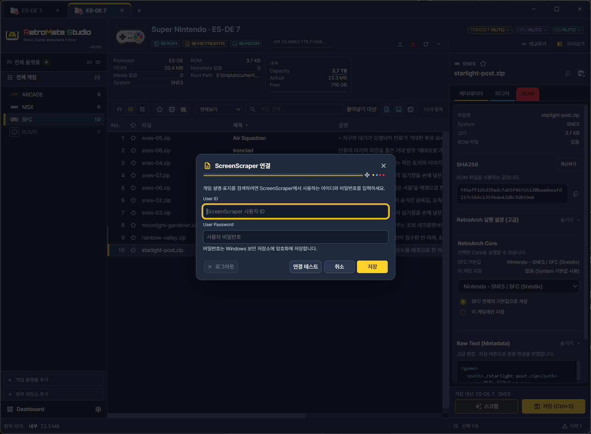
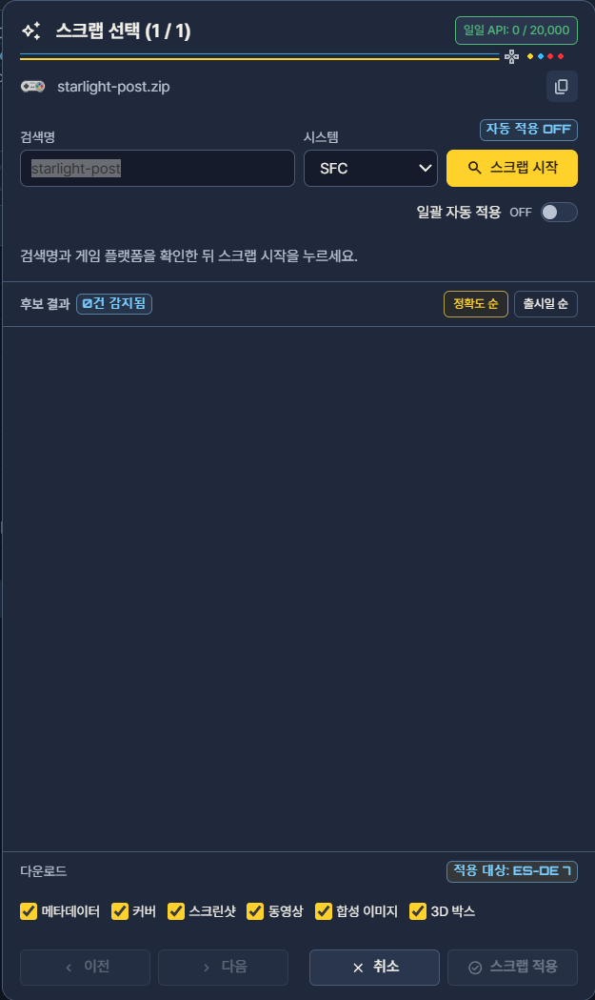

온라인 스크랩
온라인 스크랩은 ScreenScraper에서 현재 게임에 해당하는 게임을 찾아 제목·설명·출시일 같은 정보와 커버·스크린샷 같은 미디어를 스크랩하여 가져오는 기능입니다. 가져오기 전에 현재 메타데이터와 ScreenScraper의 결과를 나란히 비교하고, 적용할 항목만 골라 반영합니다. 후보가 마음에 들지 않으면 아무것도 적용하지 않고 닫을 수 있으므로, 이미 잘 정리해 둔 게임에도 부담 없이 시도할 수 있습니다.
게임목록에 설명이나 커버가 비어 있어 직접 채우기에는 게임 수가 많고, 다른 게임목록에서도 가져올 수 없는 경우에 특히 유용합니다. 반대로 서비스에 등록되지 않은 게임이나 파일명이 크게 다른 변형 ROM은 검색되지 않을 수 있으며, 이 경우에는 직접 편집하거나 다른 방법을 병행해야 합니다.
활용 상황
- 다른 게임목록에도 없는 빈칸을 채울 때. 게임목록에도, 보관소(Archive)에도, 열어 둔 다른 컬렉션에도 없어서 설명이나 커버가 비어 있는 게임에 적합합니다. 다른 게임목록을 재사용할 수 있다면 먼저 컬렉션에서 가져오기를 살펴보고, 그래도 남는 빈칸을 스크랩으로 채우는 순서가 효율적입니다.
- 일부 항목만 보충할 때. 제목은 이미 다듬어 두었으므로 그대로 두고, 설명이나 커버만 보충할 수 있습니다. 정보와 미디어를 따로 고를 수 있기 때문입니다.
- 시스템 단위로 빈칸을 찾을 때. 한 게임이 아니라 시스템 전체 또는 선택한 여러 게임을 대상으로 한꺼번에 검색할 수 있습니다. 다만 대상이 많을수록 시간이 오래 걸리고 계정 한도도 많이 소모됩니다.
사전 준비


- 1사용자 ID
- 2비밀번호
- 3저장
설정의 스크랩 항목에서 사용할 서비스와 계정(인증 정보)을 입력하고 연결 확인으로 연결 상태를 점검합니다. ScreenScraper는 외부 서비스이므로 결과의 범위와 양은 앱이 아니라 다음 조건에 따라 달라집니다.
| 조건 | 결과에 미치는 영향 |
|---|---|
| 서비스의 자료 보유 여부 | 서비스에 등록되지 않은 게임은 후보가 나오지 않거나 일부 항목이 비어 있을 수 있습니다. |
| 계정의 사용 한도 | 일반적으로 계정 등급에 따라 하루 요청 수와 동시 처리 수가 제한되며, 한도를 넘으면 검색이나 미디어 내려받기가 실패할 수 있습니다. |
| 네트워크 상태와 서비스 운영 상황 | 연결이 불안정하거나 서비스가 점검 중이면 응답이 느려지거나 실패합니다. |
현재 온라인 스크랩은 ScreenScraper를 사용하며 계정 연결 창에서 사용자 ID·비밀번호를 입력하고 연결 테스트·저장을 실행합니다.
메뉴와 적용 대상
- 게임 상세의 스크랩을 누르거나, 게임 또는 시스템을 우클릭하여 스크랩을 엽니다.
- 검색 대상(게임 하나, 선택한 여러 게임, 시스템 전체)과 서비스를 확인하고 검색합니다. 처음에는 몇 개의 게임으로 결과 품질을 확인한 뒤 범위를 넓히는 편이 안전합니다.
- 결과에서 게임에 맞는 후보를 고릅니다. 후보 선택 기준은 아래 절에서 설명합니다.
- 후보의 정보와 미디어를 현재 메타데이터와 비교합니다.
- 가져올 정보와 미디어를 항목별로 고르고 적용합니다.
- 작업이 끝나면 게임목록에서 새 정보가 반영되었는지 확인합니다. 적용은 선택한 항목에만 이루어지며, 고르지 않은 항목은 기존 값이 유지됩니다.


- 1검색명
- 2스크랩 시작

화면 구성
| 그림 | 번호 | 항목 | 하는 일 |
|---|---|---|---|
| 검색 화면 | ① | 검색 대상 | 선택 게임·여러 게임·시스템 중 검색할 범위를 정합니다. 범위가 넓을수록 처리 시간과 계정 한도 소모가 늘어납니다. |
| 검색 화면 | ② | 서비스·검색어 | 사용할 서비스와 인증 정보를 지정하고, 게임을 찾는 검색어를 확인합니다. 연결에 문제가 있으면 여기서 먼저 점검합니다. |
| 검색 화면 | ③ | 진행 상태 | 완료·실패·중지 상태를 게임별로 보여 줍니다. |
| 후보 선택 화면 | ① | 게임별 검색 결과 | 검색한 게임마다 후보를 나열하며, 맞는 게임을 하나 고릅니다. |
| 후보 선택 화면 | ② | 후보 정보 | 후보의 시스템·출시일·개발사를 보여 줍니다. 같은 제목의 다른 게임을 구분하는 근거입니다. |
| 후보 선택 화면 | ③ | 미디어 미리보기 | 내려받을 커버 등을 미리 보여 줍니다. 보유한 ROM의 지역·버전과 맞는지 확인합니다. |
| 후보 선택 화면 | ④ | 가져올 항목 선택 | 적용할 필드(제목, 설명 등)와 내려받을 미디어(커버 등)를 항목별로 고릅니다. |
후보 선택 기준
제목이 같거나 비슷해도 ScreenScraper에는 시스템·지역·출시판이 서로 다른 항목이 함께 등록되어 있을 수 있습니다. 잘못된 후보를 적용하면 다른 지역판의 설명이나 커버가 들어갈 수 있으므로 다음을 함께 비교합니다.
- 시스템: 같은 게임이 여러 기종으로 나온 경우, 현재 게임이 속한 시스템과 같은지 확인합니다.
- 출시일·개발사: 리메이크나 재발매판을 구분하는 단서가 됩니다.
- 설명과 미디어 미리보기: 갖고 있는 ROM의 지역·버전과 맞는 커버인지 확인합니다.
후보를 바꾸면 가져올 수 있는 정보와 미디어도 함께 바뀝니다. 따라서 후보를 바꾼 뒤에는 가져올 항목 선택(④)을 다시 확인합니다. 제목은 그대로 두고 설명이나 커버만 채우려면 정보와 미디어를 따로 선택합니다.
중지와 다시 시도
중지는 진행 중인 검색과 처리의 남은 부분을 멈춥니다. 이미 처리가 끝난 게임은 그대로 남습니다. 작업이 끝나면 결과에서 완료·중지·실패를 구분하고, 필요한 대상만 골라 다시 검색합니다. 전체를 처음부터 다시 실행할 필요가 없으므로 계정 한도를 아낄 수 있습니다.
미디어는 서비스에서 파일을 내려받으므로 계정 한도·네트워크·제공 상태에 따라 일부만 실패할 수 있습니다. 이 경우 정보는 적용되었으나 미디어만 비어 있을 수 있으니, 결과의 항목별 상태를 확인합니다. 받은 자료의 이용 조건은 서비스의 고지를 따릅니다.
문제 해결
검색 결과가 없습니다.
서비스와 시스템 선택이 현재 게임과 맞는지 확인합니다. 검색어에 지역·버전 표기 같은 파일명 태그가 많이 붙어 있으면 일치하지 않을 수 있으므로 태그를 줄여 다시 시도합니다. 연결 확인으로 인증 상태도 점검합니다.
한글패치 등 변형 ROM이 검색되지 않습니다.
파일 이름이 서비스에 등록된 원본 이름과 달라 일치하지 않는 경우입니다. 일본 게임은 원제로 검색해야 나오는 경우가 있고, 부제를 빼거나 : 앞뒤 공백을 바꾸면 결과가 달라질 수 있습니다. 검색 화면의 검색 대상과 제목을 기준으로 후보를 비교합니다. 대상 시스템·지역·파일명 태그와 후보의 실제 정보를 함께 확인합니다.
미디어 일부만 받지 못했습니다.
결과의 실패 사유와 서비스의 제한(계정 한도, 일시적 장애)을 확인합니다. 연결이 복구되면 실패한 자료만 골라 다시 시도합니다.
한도 초과나 연결 오류가 반복됩니다.
한 번에 처리하는 게임 수를 줄이고, 시간을 두고 다시 시도합니다. 계정 정보가 올바른지 연결 확인으로 점검합니다.
엉뚱한 설명이나 커버가 적용되었습니다.
다른 시스템이나 지역판의 후보를 고른 경우입니다. 해당 게임에서 스크랩을 다시 열어 올바른 후보를 고르고 필요한 항목만 다시 적용합니다. 이전 값이 필요하다면 적용 전에 게임목록을 백업해 두는 것이 안전합니다.
요청 자료와 계정 보관
ScreenScraper 검색은 서비스에 시스템·파일명·파일 크기와, 검색에 사용한 CRC/MD5/SHA1 같은 식별값 및 인증 정보를 보냅니다. 게임 파일 전체를 업로드하는 검색은 아닙니다. 서버에서 받은 정보와 미디어 중 선택한 자료를 대상 게임목록에 적용합니다.
사용자 계정의 비밀정보는 Windows 자격 증명 저장소 또는 Windows 암호화 방식으로 보호해 보관합니다. 다른 PC로 폴더만 옮긴 경우 다시 로그인해야 할 수 있습니다. 비밀번호와 인증 토큰을 문의 글이나 로그에 포함하지 마세요.